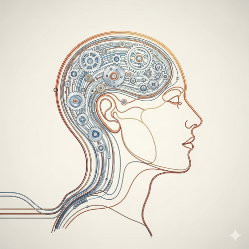
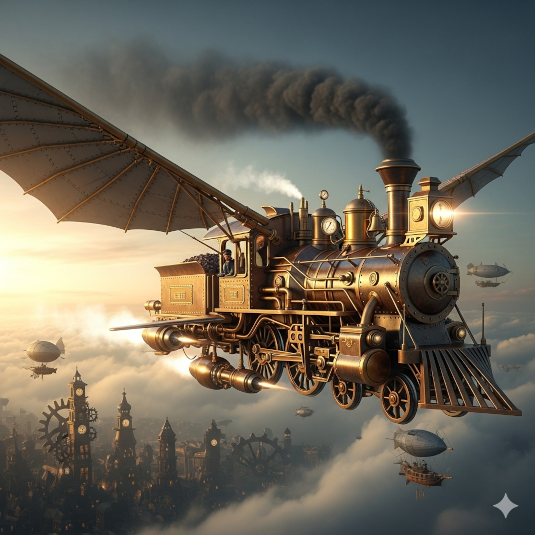

1 / 3
![A conceptual digital illustration depicting a silhouetted figure confidently riding a glowing wireframe horse, its form made of digital elements and geometric, luminous UI-like saddle, stirrups, and reins. The overall scene is enveloped in a radiant, swirling aura of abstract colors, symbolizing the positive user experience (UX) derived from intuitive user interface (UI). This imagery visually represents Dain Miller's quote: 'UI is the saddle, the stirrups, & the reins. UX is the feeling you get from being able to ride the horse'.](images/dain-miller-sadle-reigns-quote-md.png)
"UI is the saddle, the stirrups, & the reigns. UX is the feeling you
get from being able to ride the horse"
2 / 3

"Usability is about people and how they understand and use things,
not technology"
3 / 3

“Curiosity is the engine of achievement.”